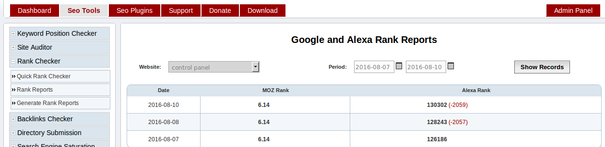
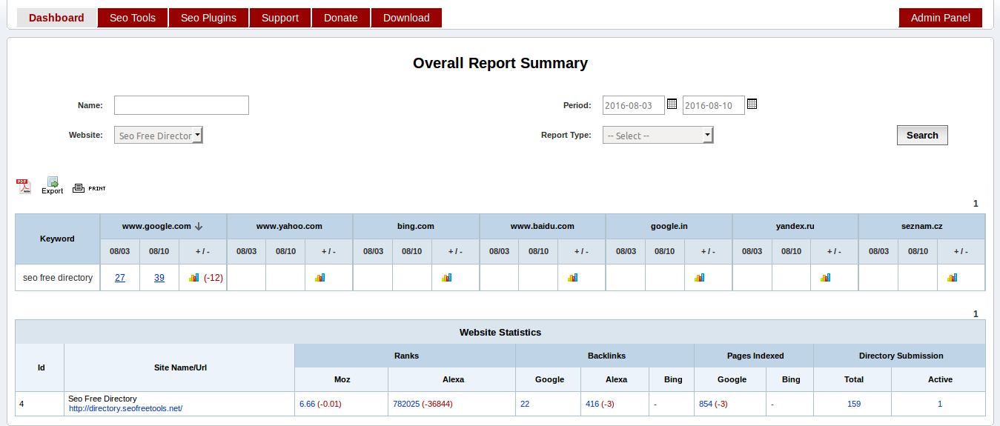
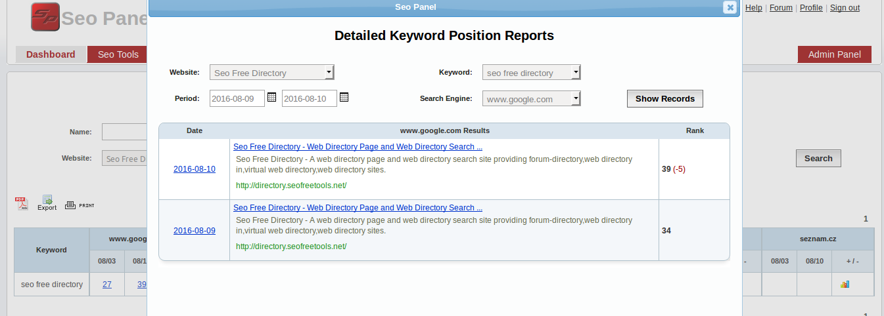

2. User Guide¶
This guide explains, how user setup seo panel according to their requirement.
1. Website Management¶
Create Website¶
After installation of seo panel, next step is to create website.
Go to Admin Panel => Website Manager => New Website
Enter details as following screen shot

User - The owner of the website Eg: spadmin
Name - The name of the website Eg: Seo Panel
Url - The url to website page Eg: http://www.seopanel.in/
Click on `Crawl Meta Data` link to get the following details of website. You can also edit this details later.
Title - The title of the website
Description - The description of the website
Keywords - The keywords related to the website
You can also edit, activate, deactivate and delete websites using options available in the Website Manager page.
Import Websites¶
You can also import group of websites to seo panel using this feature.
Go to Admin Panel => Website Manager => Import Websites
Enter details as following screen shot

User - The owner of the website Eg: spadmin
Website CSV File: - The group of websites added in csv format
CSV format:
name, url, meta title, meta description, meta keywords, status
Click on `Sample CSV File` link to get sample csv file and create your website csv file using it.
Delimiter - The delimiter character used in the csv format(default value is coma `,`)
Enclosure - The enclosure character used in the csv format when value contains delimiter(default value is double quotes `”`). Eg: mango,orange
Escape - The escape character used in the csv format(Default value is forward backslash `\`)
Proceed with the values in the form, you will get following window with the stats of import.

2. Settings¶
System Settings¶
Next step is to update system settings according to your environment.
Go to Admin Panel => System Settings=> System Settings
Enter details as following screen shot

Seo Panel Title - The title of your seo panel installation Eg: Smith’s seo panel
Seo Panel Description - The meta description of your seo panel installation
Seo Panel Keywords - The meta keywords of your seo panel installation
Number of entries per page - The max number of entries to start pagination(Default value is ‘10’)
User registration interface - Enable / Disable users to register in your seo panel
Default Language - The default language of your seo panel
SMTP Settings
- Enable SMTP - Enable / Disable smtp settings for sending mail from seo panel
- SMTP Host - The hostname of smtp server(default value is ‘localhost’)
- SMTP Username - SMTP account username
- SMTP Password - SMTP account password
- SMTP Mail Port - SMTP mail port used(default value is ‘25’)
Time Zone: - Your timezone to see reports in your time
Company Name - The name of your company
Currency - Currency used in seo panel transactions
MOZ Settings¶
Setup MOZ API to get website ranking related informations
Go to Admin Panel => System Settings=> MOZ Settings
Click on `Click here to get MOZ account` link to get free MOZ API account
Enter details as following screen shot

- Access ID - The access id of MOZ API
- Secret Key - The secret key of MOZ API
Click on `Verify connection` link to verify the API settings are working
3. Keyword Management¶
Create Keyword¶
Next step is to create keywords under websites
Go to Seo Tools => Keyword Position Checker => New Keyword
Enter details as following screen shot

- Name - Add keyword to search in search engine
- Website - The website needs to be checked with keyword search results
- Language - The language in which keyword search to be done. If you are using localized search engines like google.de, no need to select language.
- Country - The country in which keyword search to be done. If you are using localized search engines like google.de, no need to select language.
- Search Engine - Select the search engines in which keyword needs to checked. Click on ‘Select All’ to select all or use `CTRL` key to select multiple entries.
You can also edit, activate, deactivate and delete keywords using options available in the Keyword Manager page.
Import Keywords¶
You can also import group of keywords to seo panel using this feature.
Go to Seo Tools => Keyword Position Checker => Import Keywords
Enter details as following screen shot

Website - The website needs to be checked with keyword search results
Click on `Crawl Meta Data` link to get keywords of website. You can also edit this details before proceed.
Language - The language in which keyword search to be done. If you are using localized search engines like google.de, no need to select language.
Country - The country in which keyword search to be done. If you are using localized search engines like google.de, no need to select language.
Search Engine - Select the search engines in which keyword needs to checked. Click on ‘Select All’ to select all or use `CTRL` key to select multiple entries.
Keywords - Add keywords to be imported to seo panel separated with comma Eg: google seo tools,seo tools,seo
Proceed with the values in the form, you will get following window with the stats of import.

Quick Position Checker¶
This feature used to find the rank of a website in keyword search results by with out storing any data in database.
Go to Seo Tools => Keyword Position Checker => Quick Position Checker
Enter details as following screen shot

- Search Engine - Select the search engines in which keyword needs to checked
- Language - The language in which keyword search to be done. If you are using localized search engines like google.de, no need to select language.
- Country - The country in which keyword search to be done. If you are using localized search engines like google.de, no need to select language.
- Website - The website needs to be checked in keyword search results
- Keyword - Add keyword to search in search engine
- Show All results - Checked to see all results in of keyword search in search engine
4. Reports Management¶
Report Settings¶
Next step is to configure seo panel reports
Go to Admin Panel => Reports Manager => Report Settings
Enter details as following screen shot

- Delay between each spider crawl(seconds) - The delay between each crawling in your seo panel(Default value is 5 seconds)
- Allow user to generate reports - Allow users to generate reports or not(Default value is No)
- User agent - User agent used while crawling a page in seo panel
- Allow users to schedule report - Allow users to edit their report generation settings(Default value is Yes)
- System report generation interval - Seo panel report generation interval. We can set it as Daily, 2 days, Weekly and Monthly(Default value is Daily)
- Enable report email notification - Enable this feature to send reports in email
- Number of keywords needs to be checked in each cron execution - The number of keywords used in reports generation for each cron job execution(default value is 1). For efficient report generation keep it as 1
Cron Command¶
Cron job is the best method to generate reports effectively with out failures.
Go to Admin Panel => Reports Manager => Cron Command
Add following command to your cron tab
*/15 * * * * php /opt/lampp/htdocs/seopanel/cron.php

Check following tutorials to setup cron job in different environments
Setup cron job in cpanel
https://www.siteground.com/tutorials/cpanel/cron_jobs.htm
Setup cron job in plesk
Setup cron job in linux
Setup cron job in windows
Schedule Reports¶
You can also schedule reports for different users
Go to Admin Panel => Reports Manager => Schedule Reports
Enter details as following screen shot

- User - Select corresponding user to schedule reports
- Next report generation time - Next report generation date
- Reports generation interval - User report generation interval. We can set it as Daily, 2 days, Weekly and Monthly(Default value is Daily)
- Email notification - Enable this feature to send reports in user email
Report Generation Manager¶
We did not recommend to use this feature, as it may add captcha to search engine results. We plan to deprecate this feature in new releases.
Go to Admin Panel => Reports Manager => Report Generation Manager
Enter details as following screen shot

- Website - Select the required website for report generation
- Seo Tools - Choose required seo tool from the list
Archived Reports¶
Here you can see overall reports of websites added in seo panel.
Go to Admin Panel => Reports Manager => Archived Reports
Enter search filter value according to your requirements.

Filters
Name - Enter required keyword filter the reports
Period - Enter date interval to filter the reports
Website - Choose required website to filter the results
Report Type - You can select different reports types
- Keyword Position Summary - Select to get keyword reports only
- Website Statistics - Select to get website reports only
You can also choose following to download and print reports in different formats
- PDF - Click on PDF icon to download reports in PDF format
- Export - Click on Export Icon to download reports in .csv format
- Print - Click on Print Icon to print te reports
5. Site Auditor¶
Create Project¶
This section will help you to audit your website to know the stats related to SEO
Go to Seo Tools => Site Auditor => Auditor Projects
Click on ‘New Project’ button
Enter details as following screen shot

- Website - Select a website needs to be audited
- Maximum number of pages to be checked - Maximum number of pages needs to be audited(default value is 500, it can be changed from Auditor Settings)
- Exclude links - Insert links separated with comma needs to be excluded to prevent infinite links in reports. Eg: /plugin/l/, &lang_code=
- Check pagerank of pages - Check pagerank of pages(Note: it will increase the execution time of a project)
- Check backlinks of pages - Check backlinks of pages(Note: it will increase the execution time of a project)
- Check pages indexed or not - Check index status of pages(Note: it will increase the execution time of a project)
- Store all links found in a page - Store links found in pages for more detailed reports
- Check broken links in a page - Check brocken links in pages(Note: it will increase the execution time of a project)
- Execute with cron - Execute report generation with cron job. We recommened to select ‘Yes’ for better report generation.
You can also edit, activate, deactivate and delete projects using options available in the Auditor Projects page.
Generate Reports¶
This section help you to generate reports of site auditor projects.
We have 2 methods to generate reports, we recommend to use cron job method for report generation.
- Cron Job
Go to Seo Tools => Site Auditor => Cron Command
Add following command to your cron tab
*/15 * * * * php /opt/lampp/htdocs/seopanel/siteauditorcron.php
- Manual Report Generation
Go to Seo Tools => Site Auditor => Auditor Projects
Select ‘Run Project’ from Action select box of corresponding project and proceed.
You will get a window like following screen shot with stats.

Auditor Reports¶
This section will help you to understand different types of site auditor reports
Go to Seo Tools => Site Auditor => Auditor Reports
Reports
We will get different types of reports from this section
Filters
Project - Select required project to filter the reports
Page Link - Enter page link to filter the reports
Crawled - Select Yes to get pages with complete results generated. No to get all pages with partial results generated.
MOZ Rank - Select MOZ rank to filter the reports
Report Type - You can select different reports types
- Link Reports - Show reports based on links. Please check below screen shot

Click on the page link, you will get more detailed report like below screen shot

- Report Summary - Show complete report summary of a project. Please check below screen shot

- Duplicate Title - Show reports based on duplicate page titles found in the project pages.
- Duplicate Description - Show reports based on duplicate meta description found in the project pages.
- Duplicate Keywords - Show reports based on duplicate meta keywords found in the project pages.
Please check below screen shots for more details

You can also choose following to download and print reports in different formats
- PDF - Click on PDF icon to download reports in PDF format
- Export - Click on Export Icon to download reports in .csv format
- Print - Click on Print Icon to print te reports
Import Project Links¶
You can also import group of links to site auditor project, if program failed to find any required links from your website.
Go to Seo Tools => Site Auditor => Import Project Links
Enter details as following screen shot

- Project - Select project to which links have to be imported
- Links - Add project links to be imported separated with comma
Eg: http://www.seopanel.in/plugin/l/, http://www.seopanel.in/plugin/d/
Proceed with the values in the form, you will be redirected to projects page with the stats of import.
Sitemap Generator¶
You can also generate sitemap for your website using this feature.
Go to Seo Tools => Site Auditor => Sitemap Generator
Enter details as following screen shot

Project - Select a project to generate sitemap
Sitemap Type - Select type of sitemap according to your requirement
- XML - Can be used to submit in google web master tools
- Text - Can be used to submit in google web master tools
- HTML - Can be used to publish in your website
Change frequency - Select frequency of search engine crawl
Priority - Select priority of search engine crawl
Exclude Url - Enter links separated with comma needs to be excluded from sitemap Eg: Eg: http://www.seopanel.in/plugin/l/, http://www.seopanel.in/plugin/d/
Proceed with the values in the form, you will get download link for generated sitemap as above screenshot.
Click on sitemap link to download the sitemap.
Auditor Settings¶
In this section you can configure site auditor general settings.
Go to Seo Tools => Site Auditor => Auditor Settings
Enter details as following screen shot

- Maximum number of pages allowed per website - The maximum number of pages can be crawled in a project(Default value is 500)
- Site auditor crawl delay between each pages - Delay between each page reports generation(Default value is 20). We recommend not decrease this value for betetr report generation.
- Crawl relative links in a page - Allow project to crawl the relative links in each page
6. Directory Submission¶
Directory Submission Tool¶
This section will help you to submit your website to internet directories. That will help you to increase backlinks to your website.
Go to Seo Tools => Directory Submission => Automatic Submission

Enter details in filter according to your requirements
- Website - The website needs to be submitted to the directories
- Directories with out captcha - Check this, if you want to submit to directories with out captcha only
- Directories with out Reciprocal Link - Check this, if you want to submit to directories with out reciprocal link only
- Pagerank - Select to submit to directories with particular pagerank
- Language - Select to submit to directories with particular language
Click on ‘Show Details’, you will be redirected to folowing page

Enter details in form according to above screen shot
Owner Name - The name of the owner of website
Owner Email - The email address of the owner of website
Website Category - Enter categories, separated with comma according to the priority. Start with Top priority category. Seo panel will auto select submission category according to this value.
Website Url - The url of the website needs to be submitted
Click on `Crawl Meta Data` link to get the page title and meta tags. You can also edit this details later.
Submit Title1 - The title of the submission entry
Submit Description1 - The description of the submission entry
Submit Keywords - The keyword of the submission entry
Reciprocal Link: - The reciprocal page link, where you have added submission directory website link. This entry required when directory submission requires reciprocal link.
Submit Title(2-5) - The optional title of the submission entry. If we add it, each submission will take random entry from this page title list
Submit Description(2-5) - The optional description of the submission entry. If we add it, each submission will take random entry from this description list
Click on ‘Proceed’, you will be redirected to folowing page

Enter details in form according to above screen shot
Directory - Show the directory link where wbesite id submitted
Pagerank - The pagerank of directory
Category - The category to which website is submitted. You can change it according to the requirements.
Reciprocal Link - The reciprocal page link, where you have added submission directory website link. You can change it according to the requirements.
Enter the code shown - Enter the captacha text shown in the image. If image is not clear, please click on Reload button to reload the captcha again.
Submit Options
- Cancel - To cancel the submission
- Skip - To skip the current directory. It wil load next directory, with out submission to current directory.
- Reload - To relead the current directory submission form Eg: If captcha image is not clear, reload to get new captcha image
- Submit - Submit to the current directory shown in the form
Click on ‘Submit’, you will be redirected to following page

You can see message like above screen shot.
‘Link submitted and awaiting for approval’
Submission Reports¶
This section will help you to track the directory submission done earlier.
Go to Seo Tools => Directory Submission => Submission Reports
Enter details in search filter according to your requirements
- Name - Enter name of the directory to add in search filter
- Website - Select website to add in search filter
- Status - Select the status of directory submission to add in search filter
It will show the directory submission reports with details like directory name, date of submission, page rank, status etc

Check Status of directory submission
Select ‘Check Status’ from right most action select box. You can also delete the submission from reports.
Skipped Directories¶
This section will help you to track the directory submission skipped earlier.
Go to Seo Tools => Directory Submission => Skipped Directories

This report will show the directories skipped during submission. Select particular website to get skipped directories of it.
Click on ‘Add back to directory list’ to add it again for directory subsmission.
Featured Submission¶
This section will help you to submit your website to featured directories. These submission will be approved with in 24 hours and also it will show as featured websites.
Go to Seo Tools => Directory Submission => Featured Submission

Click on ‘Submit >>’ to submit your website to these directories.
Check Submission Status¶
This section will help you to check status of all directory submissions of a website.
Go to Seo Tools => Directory Submission => Check Submission Status

Select website and click on ‘Proceed’ to check status of all directory submission of a website
Directory Manager¶
This section will help you manage directories in your seo panel.
Go to Admin Panel => Directory Manager => Directory Manager

Enter required search filters to get the list of directories
Click on ‘Check Status’ to find the current status of directory. You can also manually change the status of directory by click on the status link ‘Active’ and ‘Inactive’
Check Directory Status¶
This section will help you check status of all directories in your seo panel.
Go to Admin Panel => Directory Manager => Check Directory

Select ‘Status’ of directories needs to be checked.
Click on ‘Proceed’ to check the current status of all directories according to the search filter.
7. Rank Checker¶
Quick Rank Checker¶
This feature used to find the rank of a website by with out storing any data in database.
Go to Seo Tools => Rank Checker => Quick Rank Checker
Enter details as following screen shot

- Website - Add website links one per line needs to be checked
Click on ‘Proceed’ will show the ‘Alexa’ and ‘MOZ’ rank
Rank Reports¶
This section will show the rank reports of websites
Go to Seo Tools => Rank Checker => Rank Reports
Enter search filter details as following screen shot

Currently it will show the ‘Alex’ and ‘MOZ’ rank with difference in ranks
Generate Rank Reports¶
This section used to generate rank reports of websites. We did not recommend to use this feature. Use cron job for report generation
8. Backlinks Checker¶
Quick Backlinks Checker¶
This feature used to find the backlink of a website by with out storing any data in database.
Go to Seo Tools => Backlinks Checker => Quick Backlinks Checker
Enter details as following screen shot

- Website - Add website links one per line needs to be checked
Click on ‘Proceed’ will show the backlink count in different search engines
Backlinks Reports¶
This section will show the backlink reports of websites
Go to Seo Tools => Backlinks Checker => Backlink Reports
Enter search filter details as following screen shot

Currently it will show the backlink count in different search engines.
Generate Backlinks Reports¶
This section used to generate backlink reports of websites. We did not recommend to use this feature. Use cron job for report generation.
9. Search Engine Saturation¶
Quick Saturation Checker¶
This feature used to find the search engine saturation of a website by with out storing any data in database.
Go to Seo Tools => Search Engine Saturation => Quick Saturation Checker
Enter details as following screen shot

- Website - Add website links one per line needs to be checked
Click on ‘Proceed’ will show the saturation report in different search engines
Saturation Reports¶
This section will show the saturation reports of websites
Go to Seo Tools => Search Engine Saturation => Saturation Reports
Enter search filter details as following screen shot

Currently it will show the saturation report in different search engines
Generate Saturation Reports¶
This section used to generate search engine saturation reports of websites. We did not recommend to use this feature. Use cron job for report generation
10. Dashboard¶
Dashboard Reports¶
Here you can see overall reports of websites added in seo panel.
Go to Dashboard
Enter search filter value according to your requirements.
Filters
Name - Enter required keyword filter the reports
Period - Enter date interval to filter the reports
Website - Choose required website to filter the results
Report Type - You can select different reports types
- Keyword Position Summary - Select to get keyword reports only
- Website Statistics - Select to get website reports only
Click on ‘graph’ icon to see reports in graph as below screen shot

Click on ‘rank’ link to see reports in more detailed format as below screen shot
You can also choose following to download and print reports in different formats
- PDF - Click on PDF icon to download reports in PDF format
- Export - Click on Export Icon to download reports in .csv format
- Print - Click on Print Icon to print te reports
11. User Management¶
Create User¶
This section help you to manage users of soe panel.
Go to Admin Panel => User Manager => New User
Enter details as following screen shot

- Username - Enter username of the user
- Password - Enter password for user account
- Confirm Password - Enter confirm password for user
- First Name - Enter first name of the user
- Last Name - Enter last name of the user
- Email - Enter email address of the user
- User Type - Select user type according to the requirement
- Expiry Date - The expiry date for the user account. Please add blank entry, if you do not want to set expiry date for user account. If user account expired, user could not access the features of seo panel.
You can also edit, activate, deactivate and delete users using options available in the User Manager page.
Create User Type¶
Using this feature we can add new user type with custom privileges.
Go to Admin Panel => User Type Manager => New User Type
Enter details as following screen shot

- Name - Enter name of the user type
- Description - Enter description of the user type
- Keywords Count - Maximum number of keywords can be created by user
- Websites Count - Maximum number of websites can be created by user
- Status - Status of the user type
You can also edit, activate, deactivate and delete user type using options available in the User Type Manager page.
Also we can integrate payment plugin with user type manager of seo panel to do subscription business.
Click on following link to download and activate membership subscription plugin.